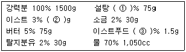

제과기능사 (2009-09-27 기출문제)
1과목: 제조이론
1. 일반적인 과자반죽의 팬닝시 주의점이 아닌 것은?
- 종이 깔개를 사용한다.
- 철판에 넣은 반죽은 두께가 일정하게 되도록 펴준다.
- 팬기름을 많이 바른다.
- 팬닝 후 즉시 굽는다.
(정답률: 85%)

2. 제품의 생산원가를 계산하는 목적에 해당하지 않는 것은?
- 이익 계산
- 판매가격 결정
- 원,부 재료 관리
- 설비 보수
(정답률: 85%)
3. 다음 중 가장 고온에서 굽는 제품은?
- 파운드 케이크
- 시퐁 케이크
- 퍼프 페이스트리
- 과일 케이크
(정답률: 59%)
4. 반죽형 케이크의 믹싱방법 중 제품에 부드러움을 주기 위한 목적으로 사용하는 것은?
- 크림법
- 블랜딩법
- 설탕/물 법
- 1단계법
(정답률: 63%)
5. 흰자 100에 대하여 설탕 180의 비율로 만든 머랭으로써 구웠을 때 표면에 광택이 나고 하루쯤 두었다가 사용해도 무방한 머랭은?
- 냉제 머랭
- 온제 머랭
- 이탈리안 머랭
- 스위스 머랭
(정답률: 58%)
6. 찜을 이용한 제품에 사용되는 팽창제의 특성으로 알맞은 것은?
- 지속성
- 속효성
- 지효성
- 이중팽창
(정답률: 72%)
7. 퍼프 페이스트리를 정형할 때 수축하는 경우는?
- 반죽이 질었을 경우
- 휴지시간이 길었을 경우
- 반죽 중 유지 사용량이 많았을 경우
- 밀어펴기 중 무리한 힘을 가했을 경우
(정답률: 63%)
8. 소맥분 온도 25℃, 실내온도 26℃, 수돗물 온도 18℃, 결과온도30 ℃, 희망온도 27℃, 사용물의 양이 10kg일 때 마찰계수는?
- 21
- 26
- 31
- 45
(정답률: 47%)
9. 반죽형 쿠키 중 전란의 사용량이 많아 부드럽고 수분이 가장 많은 쿠키는?
- 스냅쿠키
- 머랭쿠키
- 드롭쿠키
- 스펀지 쿠키
(정답률: 63%)
10. 소금이 제과에 미치는 영향이 아닌 것은?
- 향을 좋게 한다.
- 잡균의 번식을 억제한다.
- 반죽의 물성을 좋게 한다.
- pH를 조절한다.
(정답률: 51%)
11. 파이의 일반적인 결점 중 바닥 크러스트가 축축한 원인이 아닌 것은?
- 오븐 온도가 높음
- 충전물 온도가 높음
- 파이 바닥 반죽이 고율배합
- 불충분한 바닥열
(정답률: 56%)
12. 커스터드 크림의 재료에 속하지 않는 것은?
- 우유
- 계란
- 설탕
- 생크림
(정답률: 84%)
13. 다음 중 일정한 용적 내에서 팽창이 가장 큰 제품은?
- 파운드 케이크
- 스펀지 케이크
- 레이어 케이크
- 엔젤푸드 케이크
(정답률: 64%)
14. 도넛 제조시 수분이 적을 때 나타나는 결점이 아닌 것은?
- 팽창이 부족하다.
- 혹이 튀어 나온다.
- 형태가 일정하지 않다.
- 표면이 갈라진다.
(정답률: 74%)
15. 젤리 롤 케이크를 마는데 표피가 터질 때 조치할 사항으로 적합하지 않은 것은?
- 노른자를 증가시킨다.
- 팽창제 사용량을 감소시킨다.
- 설탕의 일부를 물엿으로 대치한다.
- 덱스트린의 점착성을 이용한다.
(정답률: 75%)
16. 성형에서 반죽의 중간발효 후 밀어펴기 하는 과정의 주된 효과는?
- 글루텐 구조의 재 정돈
- 가스를 고르게 분산
- 부피의 증가
- 단백질의 변성
(정답률: 55%)
17. 냉동생지법에 적합한 반죽의 온도는?
- 18~22
- 26~30
- 32~36
- 38~42
(정답률: 74%)
18. 오랜 시간 발효 과정을 거치지 않고 배합 후 정형하여 2차 발효를 하는 제빵법은?
- 재반죽법
- 스트레이트법
- 노타임법
- 스펀지법
(정답률: 78%)
19. 오버헤드프루퍼는 어떤 공정을 해하기 위해 사용하는 것인가?
- 분할
- 둥글리기
- 중간발효
- 정형
(정답률: 56%)
20. 다음 중 빵의 노화속도가 가장 빠른 온도는?
- -18~-1℃
- 0~10℃
- 20~30℃
- 35~45℃
(정답률: 77%)
2과목: 재료과학
21. 총원가는 어떻게 구성되는가?
- 제조원가+판매비+일반관리비
- 직접재료비+직접노무비+판매비
- 제조원가+이익
- 직접원가+일반관리비
(정답률: 46%)
22. 같은 크기의 틀에 넣어 같은 체적의 제품을 얻으려고 할 때 반죽의 분할량이 가장 적은 제품은?
- 밀가루 식빵
- 호밀 식빵
- 옥수수 식빵
- 건포도 식빵
(정답률: 52%)
23. 식빵 제조에 있어서 소맥분의 4%에 해당하는 탈지분유를 사용할 때 제품에 나타는 영향으로 틀린 것은?
- 빵 표피색이 연해진다.
- 영양 가치를 높인다.
- 맛이 좋아진다.
- 제품 내상이 좋아진다.
(정답률: 59%)
24. 굽기 손실이 가장 큰 제품은?
- 식빵
- 바게트
- 단팥빵
- 버터롤
(정답률: 77%)
25. 다음은 식빵 배합표이다. ( )안에 적합한 것은?

- 5, 45, 0.01
- 5, 45, 0.1
- 0.5, 4.5, 0.01
- 50, 450, 1
(정답률: 65%)
26. 빵 제품의 평가항목 설명으로 틀린 것은?
- 외관 평가는 부피, 겉껍질 색상이다.
- 내관 평가는 기공, 속색, 조직이다.
- 종류 평가는 크기, 무게, 가격이다.
- 빵의 식감 특성은 냄새, 맛, 입안에서의 감촉이다.
(정답률: 75%)
27. 발효에 직접적으로 영향을 주는 요소와 가장 거리가 먼 것은?
- 반죽 온도
- 계란의 신선도
- 이스트의 양
- 반죽의 pH
(정답률: 78%)
28. 스트레이트법으로 일반 식빵을 만들 때 믹싱 후 반죽의 온도로 가장 이상적인 것은?
- 20℃
- 27℃
- 34℃
- 41℃
(정답률: 80%)
29. 다음 중 포장 전 빵의 온도가 너무 낮을 때는 어떤 현상이 일어나는가?
- 노화가 빨라진다.
- 썰기가 나쁘다.
- 포장지에 수분이 응축된다.
- 곰팡이, 박테리아의 번식이 용이하다.
(정답률: 79%)
30. 다음 중 가스 발생량이 많아져 발효가 빨라지는 경우가 아닌 것은?
- 이스트를 많이 사용할 때
- 소금을 많이 사용할 때
- 반죽에 약산을 소량 첨가할 때
- 발효실 온도를 약간 높일 때
(정답률: 63%)
3과목: 영양학
31. 케이크, 쿠키, 파이, 페이스트리용 밀가루의 제과 적성 및 점성을 측정하는 기구는?
- 아밀로그래프
- 패리노그래프
- 애그트론
- 맥미카엘 점도계
(정답률: 43%)
32. 다음 중 전분당이 아닌 것인?
- 물엿
- 설탕
- 포도당
- 이성화당
(정답률: 39%)
33. 다음 중 향신료를 사용하는 목적이 아닌 것은?
- 냄새 제거
- 맛과 향 부여
- 영양분 공급
- 식욕 증진
(정답률: 79%)
34. 젤리화의 요소가 아닌 것은?
- 유기산류
- 염류
- 당분류
- 펙틴류
(정답률: 75%)
35. 모노 디 글리세리드는 어느 반응에서 생성되는가?
- 비타민의 산화
- 전분의 노화
- 지방의 가수분해
- 단백질의 변성
(정답률: 65%)
36. 맥아당을 분해하는 효소는?
- 말타아제
- 락타아제
- 리파아제
- 프로테아제
(정답률: 76%)
37. 믹서내에서 일어나는 물리적 성질을 파동 곡선기록기로 기록하여 밀가루의 흡수율, 믹싱시간, 믹싱 내구성 등을 측정하는 기계는?
- 패리노그래프
- 익스텐소그래프
- 아밀로그래프
- 분광분석기
(정답률: 70%)
38. 빵제품이 단단하게 굳는 현상을 지연시키기 위하여 유지에 첨가하는 유화제가 아닌 것은?
- 모노디글리세리드
- 레시틴
- 유리지방산
- 에스에스엘(SSL)
(정답률: 51%)
39. 케이크 반죽을 하기 위해 계란 노른자 500g이 필요하다. 몇 개의 계란이 준비되어야 하는가? (단, 계란 1개의 중량 52g, 껍질12%, 노른자33%, 흰자 55%)
- 26개
- 30개
- 34개
- 38개
(정답률: 56%)
40. 효모에 대한 설명으로 틀린 것은?
- 당을 분해하여 산과 가스를 생성한다.
- 출아법으로 증식한다.
- 제빵용 효모의 학명은 saccharomyces s(c)erevisiae이다.
- 산소의 유무에 따라 증식과 발효가 달라진다.
(정답률: 46%)
41. 피자 제조시 많이 사용하는 향신료는?
- 넛메그
- 오레가노
- 박하
- 계피
(정답률: 80%)
42. 우유의 성분 중 제품의 껍질색을 개선시켜 주는 것은?
- 수분
- 유지방
- 유당
- 칼슘
(정답률: 80%)
43. 다음 중 식물계에는 존재하지 않는 당은?
- 과당
- 유당
- 설탕
- 맥아당
(정답률: 74%)
44. 제빵에서 사용하는 물로 가장 적합한 것은?
- 연수
- 아연수
- 아경수
- 경수
(정답률: 81%)
45. 글루텐을 형성하는 밀가루의 주요 단백질로 그 함량이 가장 많은 것은?
- 글루테닌
- 글리아딘
- 글로불린
- 메소닌
(정답률: 38%)
46. 하루 섭취한 2700kcal 중 지방은 20%, 탄수화물은 65%, 단백질은 15% 비율 이었다. 지방, 탄수화물, 단백질은 각각 약 몇 g을 섭취하였는가?
- 지방 135g 탄수화물 438.8g 단백질 45g
- 지방 540g 탄수화물 1755.2g 단백질 4⑤.2g
- 지방 60g 탄수화물 438.8g 단백질 101.3g
- 지방 135g 탄수화물 195g 단백질 101.3g
(정답률: 55%)
47. 설탕의 구성 성분은?
- 포도당과 과당
- 포도당과 갈락토오스
- 포도당 2분자
- 포도당과 맥아당
(정답률: 72%)
48. 리놀레산 결핍 시 발생할 수 있는 장애가 아닌 것은?
- 성장지연
- 시각 기능 장애
- 생식장애
- 호흡장애
(정답률: 57%)
49. 다음 중 비타민 K와 관계가 있는 것은?
- 근육 긴장
- 혈액 응고
- 자극 전달
- 노화 방지
(정답률: 72%)
50. 아미노산의 성질에 대한 설명 중 맞는 것은?
- 모든 아미노산은 선광성을 갖는다.
- 아미노산은 융점이 낮아서 액상이 많다.
- 아미노산은 종류에 따라 등전점이 다르다.
- 천연단백질을 구성하는 아미노산은 주로 D형이다.
(정답률: 65%)
4과목: 식품위생학
51. 식품첨가물의 구비조건이 아닌 것은?
- 인체에 유해한 영향을 미치지 않을 것
- 식품의 영양가를 유지할 것
- 식품에 나쁜 이화학적 변화를 주지 않을 것
- 소량으로는 충분한 효과가 나타나지 않을 것
(정답률: 85%)
52. 다음 중 인수공통전염병은?
- 탄저병
- 콜레라
- 세균성이질
- 장티푸스
(정답률: 76%)
53. 주로 단백질 식품이 혐기성균의 작용에 의해 본래의 성질을 잃고 악취를 내거나 유해물질을 생성하여 먹을 수 없게 되는 현상은?
- 발효
- 부패
- 갈변
- 산패
(정답률: 87%)
54. 아플라톡신은 다음 중 어디에 속하는가?
- 감자독
- 효모독
- 세균독
- 곰팡이독
(정답률: 74%)
55. 경구전염병과 거리가 먼 것은?
- 유행성간염
- 콜레라
- 세균성이질
- 일본뇌염
(정답률: 80%)
56. 미생물의 증식에 의해서 일어나는 식품의 부패나 변패를 방지하기 위하여 사용되는 식품첨가물은?
- 보존료
- 착색료
- 산화방지제
- 표백제
(정답률: 68%)
57. 위생동물의 일반적인 특성이 아닌 것은?
- 식성 범위가 넓다.
- 음식물과 농작물에 피해를 준다.
- 병원미생물을 식품에 감염시키는 것도 있다.
- 발육기간이 길다.
(정답률: 68%)
58. 정제가 불충분한 기름 중에 남아 식중독을 일으키는 고시폴은 어느 기름에서 유래하는가?
- 피마자유
- 콩기름
- 면실유
- 미강유
(정답률: 80%)
59. 포도상구균에 의한 식중독 예방책으로 부적합한 것은?
- 조리장을 깨끗이 한다.
- 섭취 전에 60℃ 정도로 가열한다.
- 멸균된 기구를 사용한다.
- 화농성 질환자의 조리업무를 금지한다.
(정답률: 78%)
60. 식품위생법 상의 식품위생의 대상이 아닌 것은?
- 식품
- 식품첨가물
- 조리방법
- 기구와 용기, 포장
(정답률: 66%)